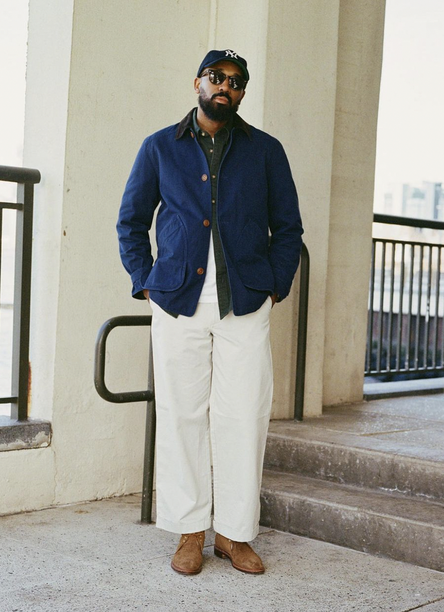

Palm Angels
Although the emerging Italian streetwear brand is still in its infancy, Palm Angels is swiftly capturing attention. The brand started as a photography project by Francesco Ragazzi, best known as Moncler's art director, drawing inspiration from skateboarders frequenting the beaches of Venice and Manhattan in LA, which gave the project its name.
Initial collections from Palm Angels had room for improvement, but the brand has evolved swiftly, successfully incorporating stylistic features akin to its peers, including extended silhouettes, camouflage motifs, an unmistakable font, and a daring amalgamation of streetwear, high fashion, and modern style.
Stüssy
When talking about streetwear, a brand that has pioneered, shaped and continues to evolve this fashion style and community is Stüssy. Born in California's surf culture, the brand's collections embody an effortless coolness, blending laid-back West Coast vibes with a touch of urban edge that have truly become synonymous with streetwear aesthetics.
Stüssy's pieces feature their iconic logo, graphic prints, and a fusion of skate, surf, and music influences. From their essential hoodies to their playful accessories, each design reflects the brand's commitment to embracing subcultures and capturing the spirit of youth.
Carhartt WIP
Originally an American workwear label that unexpectedly garnered prestige in late 20th-century subculture, Carhartt was established in 1889 by Hamilton Carhartt in Dearborn, Michigan. The firm initially created durable attire for manual laborers from its distinctive duck canvas, and gradually became a trusted provider to Detroit's automobile factory workers, as well as blue-collar workers across America.
In 1989, German fashion creators Edwin and Salomee Faeh negotiated a deal to launch a European subsidiary of the brand named Work in Progress, crafting polished, stylized adaptations of Carhartt's offerings for the European skaters, and party-goers who were attracted to the brand's robust, reasonably priced attire. The rest is history, as since then, Carhartt has experienced rapid growth in the fashion world, emerging as one of the dominant streetwear brands in both in the US and globally.
Supreme
Probably the world’s most famous streetwear brand, Supreme has over the years become more than that; it's a global phenomenon that has shaped streetwear culture for over two decades.
With its iconic box logo and limited-edition drops, Supreme represents the epitome of exclusivity and hype which has often been an argument against the era of streetwear. From collaborations with renowned artists and designers to its skateboarding roots, the brand has become a cultural force that transcends fashion.
H&M
H&M, originating in Sweden in 1947, has become a global giant in the fast fashion industry, renowned for its extensive range of affordable, trendy apparel for all age groups. It's celebrated for bringing runway trends to the mass market, ensuring stylish yet budget-friendly fashion options. Through its rapid expansion and commitment to sustainability, H&M has established a strong international presence, making it a staple in the fashion retail sector.
Zara
Founded in 1975 by Amancio Ortega, Zara rapidly ascended from its modest beginnings in Spain to a global fast fashion empire, acclaimed for its quick turnaround from design to retail. Embracing the pulse of fashion trends, Zara caters to a broad audience with its stylish yet accessible apparel for men, women, and children. The brand distinguishes itself with a unique blend of speed, fashion-forward sensibility, and commitment to sustainability, merging rapid trend adaptation with initiatives aimed at reducing environmental impact. As Zara continues to expand worldwide, it remains dedicated to delivering contemporary style in an ethically conscious manner, firmly positioning itself as a leading figure in the dynamic world of fashion.
J.Crew

J.Crew, established in 1983, has grown from its preppy roots into a distinguished global brand known for its timeless designs that blend classic aesthetics with a modern twist. Renowned for its high-quality materials and meticulous attention to detail, J.Crew offers a wide range of apparel, accessories, and footwear for men, women, and children. The brand successfully combines casual comfort with stylish sophistication, making it a go-to for everyday wear and professional attire alike. With a focus on sustainability and innovation, J.Crew continues to adapt to the evolving fashion landscape, ensuring it remains relevant and beloved by a diverse customer base seeking both style and substance in their wardrobes.
Urban Outfitters
Urban Outfitters, founded in 1970 near the University of Pennsylvania, has evolved into a multinational lifestyle retail corporation known for capturing the essence of hip, retro, bohemian, and vintage styles across its clothing, accessories, and home decor offerings. With a keen eye for emerging trends and an eclectic mix of products, Urban Outfitters appeals to young adults who seek uniqueness and individuality in their fashion choices. The brand stands out for its creative collaborations, diverse range of labels, and culturally relevant merchandise that resonates with a youth-centric audience. As it continues to expand globally, Urban Outfitters maintains its commitment to offering customers a distinctively avant-garde and innovative retail experience that reflects contemporary culture and aesthetic preferences.